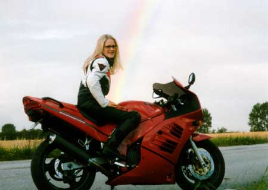
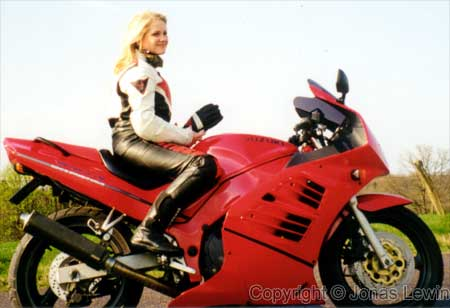
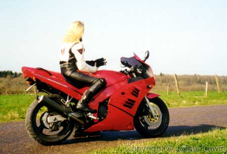
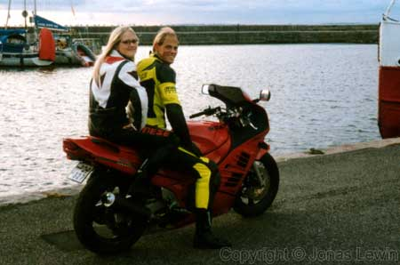
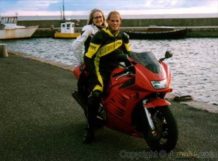

Linda
|
A
beautiful colleague. Blond long hair looks great on these pictures. She has taken a few trips with me (first one in '98). Mostly we have been close to Helsingborg, driving along the west coast of southern Sweden. I will probably never see here again, since she moved to Moscow. She told me that she really enjoyed riding with me, but it's painful for the neck after only a little while. I agree with her, since I also get muscle ache in my neck the first times I take my bike for a spin after the winter.    |